Edit modifiers exists for the mesh object, the curve and text object, the point cloud and the lattice object.
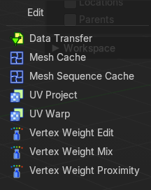
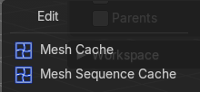
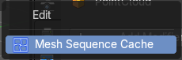
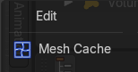
Data Transfer
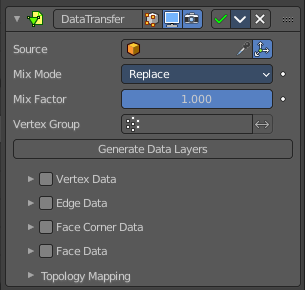
The Data Transfer modifier transfers several types of data from one mesh to another. Data types include vertex groups, UV maps, vertex colors, custom normals…
Transfer works by generating a mapping between source mesh’s items (vertices, edges, etc.) and destination ones, either on a one-to-one basis, or mapping several source items to a single destination one, using interpolation.
| Property | What it changes |
|---|---|
| Usage | Using this modifier will not create destination data layers. Use the Generate Data Layers button for this purpose when you are done with selecting the set of source data to transfer. Creating those data layers on destination mesh is not part of the modifier stack. This means that they will remain. Even once the modifier is deleted, or if the source data selection is modified. |
| Source Object | Mesh object to copy the data from. · Object transform: Evaluate the source and destination objects in global space instead of local space. |
Mix Mode
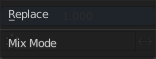
How to mix the destination elements with the source elements.
| Property | What it changes |
|---|---|
| Mix Factor | How much of the transferred data gets mixed into existing one (not supported by all data types). |
| Vertex Group | Allows per-item fine control of the mix factor. Vertex group influence can be reverted using the small “arrow” button to the right. |
| Generate Data Layers | This modifier cannot generate needed data layers itself. Adjust the settings to your needs, then press this button to generate matching destination layers, if needed. |
Vertex data
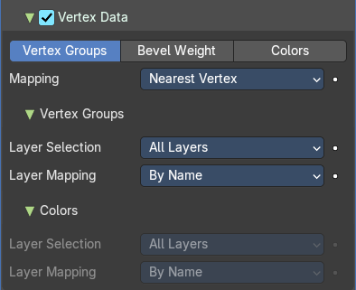
Activate this group when you want to transfer vertex data.
Vertex Groups / Bevel Weight / Color
Which vertex data layers to transfer. Vertex groups or Bevel weight or Colors.
Mapping
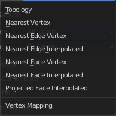
The vertex mapping method to use.
Vertex Groups
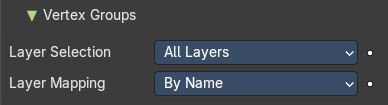
Just active with data layer Vertex groups.
Layer Selection
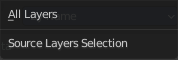
What layer from the source object gets selected.
Layer Mapping
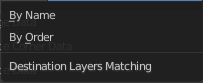
How to match the destination layer.
Colors
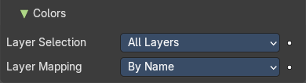
Just active with data layer Vertex groups.
Layer Selection
What layer from the source object gets selected.
Layer Mapping
How to match the destination layer.
Edge Data
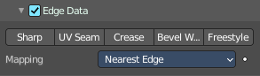
Activate this group when you want to transfer edge data.
Sharp, UV Seam, etc.
Which edge data layers to transfer. You can just use one method.
Mapping
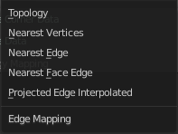
The edge mapping method to use.
Face Corner Data
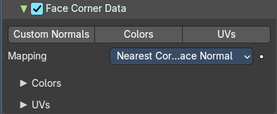
Custom normals, Vertex Colors, UV's
Which face corner data to transfer. You can just use one method.
Mapping
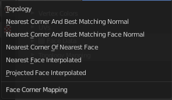
The face corner data mapping method to use.
Colors
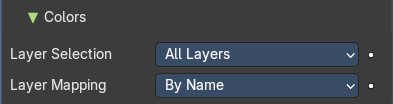
Further settings for when you choose Vertex colors.
Layer Selection
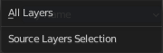
Source Layer Selection.
Layer Mapping
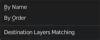
Destination layer mapping.
UV's
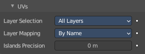
Further settings for when you choose UV's.
Layer Selection
Source Layer Selection.
Layer Mapping
Destination layer mapping.
Island Precision
The factor to control the island handling. A value of 0.0 means no island handling. A value of 0.02 is a good starting point.
Face Data
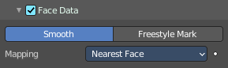
Smooth / Freestyle Mark
Which poly data layers to transfer.
Mapping
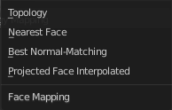
The face mapping method.
Topology Mapping
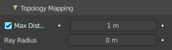
Max Distance
Only Neighbor Geometry. For non topology mapping, the source elements must be closer than the value in the edit box.
Ray Radius
The width of rays.
Mesh Cache
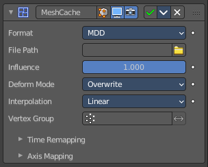
The Mesh Cache modifier allows you to apply animated mesh data to a mesh. And deform it when playing back.
This works in a similar way to shape keys. But uses external files, and allows to interchange between applications.
Tip: Both MDD and PC2 depend on the vertex order on the mesh remaining unchanged. This is a limitation of this method, so take care not to add/remove/reorder vertices once this modifier is used.
Format
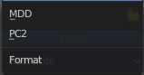
The input file format (currently .mdd and .pc2 are supported).
| Property | What it changes |
|---|---|
| File Path | Path to the cache file. |
| Influence | Factor to adjust the influence of the modifier’s deformation. |
Deform Mode
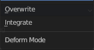
This setting defaults to Overwrite which will replace the vertex locations with those in the cache file.
When you want to mix a mesh cache file with shape keys, then you can select the Deform option which integrates deformations with the mesh cache result.
Note that this feature is limited to making smaller, isolated edits and will not work for larger changes such as re-posing limbs.
Interpolation
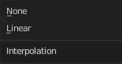
The blend mode between frames. Use linear when the frames in the cache file do not match up exactly with the frames in the blend-file.
Vertex Group
Which vertex group determines the influence of the modifier per point.
Time Remapping
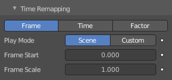
| Property | What it changes |
|---|---|
| Frame / Time / Factor | How time is calculated. |
| Play Mode | How playback operates. |
| Frame Start | Play the cache starting from this frame. |
| Frame Scale | Scale time by this factor (applied after the start value). |
Axis Mapping
Forward/Up Axis
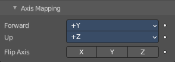
The axis for forward and up used in the source file.
Flip Axis
Allows you to flip the coordinates on an axis.
Mesh Sequence Cache
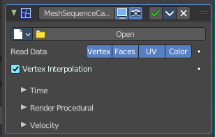
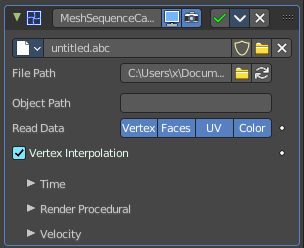
The Mesh Sequence Cache modifier loads data from Alembic files. It supports static meshes, but is mostly used to load animated meshes. Despite its name, this modifier also supports curves. It also handles file sequences, as well as meshes and curves with varying topology (like the result of fluid simulations).
When importing an Alembic file, Mesh Sequence Cache modifiers are automatically added to time-varying meshes. For time-varying object transforms (so animation of rotation, location, or scale), the Transform Cache Constraint is used.
Data property
Data browser
List of available Alembic files.
| Property | What it changes |
|---|---|
| Name | The name of the current active alembic file. |
| Fake User | Keep this file in the scene even when it has no user anymore. |
| Open Cache File | Open an alembic file. |
| Remove | Remove the alembic file. |
File Path
Path to the Alembic file.
| Property | What it changes |
|---|---|
| Load File | Open an alembic file. |
| Refresh Active | Update the files and paths. |
Object Path
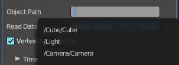
Path to the object in the alembic file used to lookup geometric data.
| Property | What it changes |
|---|---|
| Read Data | Type of data to read for a mesh object. Vertices, polygons, UV maps and Vertex Color layers. |
| Vertex Interpolation | Allow interpolation of vertex positions. |
Time Subpanel
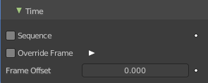
| Property | What it changes |
|---|---|
| Sequence | Whether or not the cache is separated in a series of files. |
| Override Frame | Whether to use a custom frame for looking up data in the cache file, instead of using the current scene frame. · Frame: The time to use for looking up the data in the cache file, or to determine which to use in a file sequence. |
| Frame Offset | Define a frame offset to the current frame. |
Render Procedural subpanel
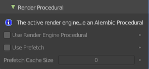
Use Render Engine Procedural
This feature is just available for Cycles, and just in an experimental state.
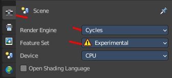
Display boxes as placeholders in the viewport.
| Property | What it changes |
|---|---|
| Use Prefetch | This feature is just available for Cycles, and just in an experimental state. When enabled, the Cycles procedural will preload animation data for faster update. |
| Prefetch Cache Size | This feature is just available for Cycles, and just in an experimental state. Memory usage limit for the cache. If the data size does not fit the renderer is aborted. 0 disables the feature. |
Velocity subpanel
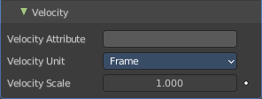
Velocity Attribute
Name of the Alembic Attribute used for generating motion blur data.
Velocity Unit
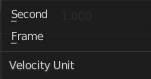
Define if velocity vectors are interpreted in Frame or Second.
Velocity Scale
Multiplier used to control the magnitude of the velocity for time effects.
UV Project
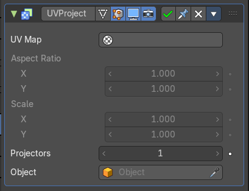
The UV Project modifier acts like a slide projector. It emits a UV map from the negative Z axis of a controller object (such as an empty object), and applies it to the object as the “light” hits it.
UV Project is great for making spotlights more diverse, and also for creating decals to break up repetition.
Usually, an Image Texture node mapped to the UV map that the modifier targets is added to the object’s material.
UV Map
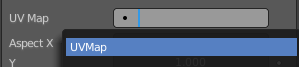
Which UV map to modify. Defaults to the active rendering layer.
| Property | What it changes |
|---|---|
| Aspect X/Y and Scale X/Y | Aspect and scale manipulation of the image. Only apply when a camera is used as projector object. |
| Projectors | Up to ten projector objects are supported. Each face will choose the closest and aligned projector with its surface normal. Projections emit from the negative Z axis (i.e. straight down a camera or light). If the projector is a camera, the projection will adhere to its perspective/orthographic setting. |
| Objects | Specify the projector object(s). |
UV Warp
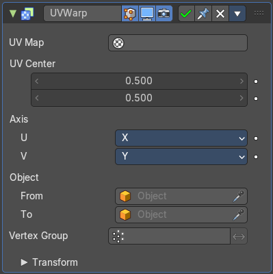
The UV Warp modifier transforms an object’s UV map based on values or two objects. Its purpose is to give you direct control over the object’s UV's in the 3D Viewport, allowing you to directly move, rotate, and scale existing UV coordinates using defined values or a controller object or bone.
Usage
How the UV's are warped is determined by the difference between the transforms (location, rotation and scale) of the from and to objects.
If the to object has the same transforms as the from object, the UV's will not be changed.
Assuming the UV Axis of the modifier is X/Y and the scale of the objects is (1, 1, 1), if the to object is one unit away from the from object on the X axis, the UV's will be transformed on the U axis (horizontally) by one full UV space (the entire width of the image).
UV Layer
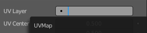
Which UV map to modify. Defaults to the active rendering layer.
| Property | What it changes |
|---|---|
| UV Center | The center point of the UV map to use when applying scale or rotation. With (0, 0) at the bottom left and (1, 1) at the top right. |
| Axis U / V | The axes to use when mapping the 3D coordinates into 2D. |
| Object From, To | The two objects used to define the transformation. |
| Vertex Group | The vertex group can be used to scale the influence of the transformation per vertex. · Invert: Invert the selection (only affect the vertices not in the vertex group). |
Transform
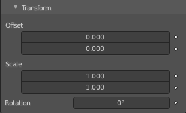
| Property | What it changes |
|---|---|
| Offset | 2D Offset for the warp. |
| Scale | 2D Scale for the warp. |
| Rotation | 2D Rotation for the warp. |
Vertex Weight Edit
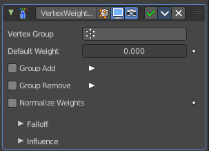
This modifier is intended to edit the weights of a vertex group.
The general process is the following, for each vertex:
(Optional) It does the mapping, either through one of the predefined functions, or a custom mapping curve.
It applies the influence factor, and optionally the vertex group or texture mask (0.0 means original weight, 1.0 means fully mapped weight).
It applies back the weight to the vertex, and/or it might optionally remove the vertex from the group if its weight is below a given threshold, or add it if it is above a given threshold.
Important: This modifier does implicit clamping of weight values in the standard (0.0 to 1.0) range. All values below 0.0 will be set to 0.0, and all values above 1.0 will be set to 1.0. Note: You can view the modified weights in Weight Paint Mode. This also implies that you will have to disable the Vertex Weight Edit modifier if you want to see the original weights of the vertex group you are editing.
| Property | What it changes |
|---|---|
| Vertex Group | The vertex group to affect. |
| Default Weight | The default weight to assign to all vertices not in the given vertex group. |
Group Add
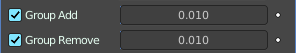
Adds vertices with a final weight over Add Threshold to the vertex group.
Threshold
The add threshold.
| Property | What it changes |
|---|---|
| Group Remove | Removes vertices with a final weight below Remove Threshold from the vertex group. · Threshold: The remove threshold. |
| Normalize Weights | Normalize the resulting weights. Without normalizing the values are clamped between 0 and 1. |
Falloff subpanel
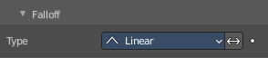
| Property | What it changes |
|---|---|
| Type | How weights are mapped to their new values. · Linear: No mapping. · Custom Curve: Allows the user to manually define the mapping using a curve. · Sharp, Smooth, Root and Sphere: These are classical mapping functions, from spikiest to roundest. · Random: Uses a random value for each vertex. · Median Step: Creates binary weights (0.0 or 1.0), with 0.5 as cutting value. |
| Invert | Inverts the falloff. |
Influence
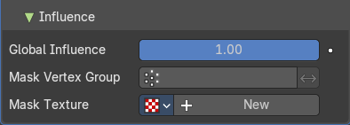
Global Influence
The overall influence of the modifier (0.0 will leave the vertex group’s weights untouched, 1.0 is standard influence).
Important: Influence only affects weights, adding/removing of vertices to/from vertex group is not prevented by setting this value to 0.0. In addition, a per-vertex fine control of the effect is possible using either a vertex group or a texture (both are mutually exclusive). The per-vertex values from those will be multiplied with the Global Influence.
| Property | What it changes |
|---|---|
| Mask Vertex Group | Choose a vertex group for masking. |
| Invert | Invert vertex group mask influence. |
Mask Texture
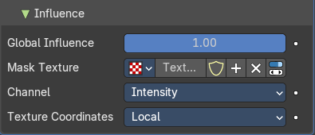
Choose a texture for masking. Note that using a mask texture will remove the mask vertex group.
Texture Property
| Property | What it changes |
|---|---|
| Texture Browser | A list of the available textures in the scene. |
| Name | The name of the currently active texture. You can rename the texture here by clicking at the edit box. |
| Fake User | Keep this texture in the scene even if it has no user. |
| New Texture | Add a new texture. |
| Remove | Remove the texture. |
| Show Texture in Texture Tab | Jumps to the texture tab where you can edit your texture. |
Channel
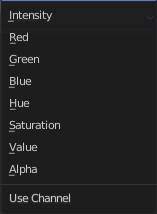
Which channel of the texture to use for masking.
Texture Coordinates
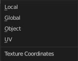
Which texture coordinates of the texture to use for masking.
Vertex Weight Mix
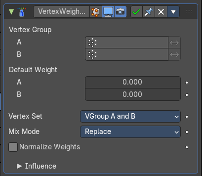
Vertex Weight Mix Modifier
This modifier mixes a second vertex group (or a simple value) into the affected vertex group, using different operations.
Important: This modifier does implicit clamping of weight values in the standard (0.0 to 1.0) range. All values below 0.0 will be set to 0.0, and all values above 1.0 will be set to 1.0. Note: You can view the modified weights in Weight Paint Mode. This also implies that you will have to disable the Vertex Weight Mix modifier if you want to see the original weights of the vertex group you are editing.
| Property | What it changes |
|---|---|
| Vertex Group A | The vertex group to affect. |
| Vertex Group B | The second vertex group to mix into the affected one. Leave it empty if you only want to mix in a simple value. |
| Default Weight A | The default weight to assign to all vertices not in the given vertex group. |
| Default Weight B | The default weight to assign to all vertices not in the given second vertex group. |
Vertex Set
Which vertices should be affected.
Important: When using All vertices, Vertices from group B or Vertices from one group, vertices might be added to the affected vertex group.
| Property | What it changes |
|---|---|
| All | Affects all vertices, disregarding the vertex groups content. |
| Vgroup A | Affects only vertices belonging to the affected vertex group. |
| Vgroup B | Affects only vertices belonging to the second vertex group. |
| Vgroup A or B | Affects only vertices belonging to at least one of the vertex groups. |
| Vgroup and B | Affects only vertices belonging to both vertex groups. |
Mix Mode
How the vertex group weights are affected by the other vertex group’s weights.
| Property | What it changes |
|---|---|
| Replace weights | Replaces affected weights with the second group’s weights. |
| Add to weights | Adds the values of Group B to Group A. |
| Subtract from weights | Subtracts the values of Group B from Group A. |
| Multiply weights | Multiplies the values of Group B with Group A. |
| Divide weights | Divides the values of Group A by Group B. |
| Difference | Subtracts the smaller of the two values from the larger. |
| Average | Adds the values together, then divides by 2. |
Influence
Global Influence
The overall influence of the modifier (0.0 will leave the vertex group’s weights untouched, 1.0 is standard influence).
Important: Influence only affects weights, adding/removing of vertices to/from vertex group is not prevented by setting this value to 0.0. In addition, a per-vertex fine control of the effect is possible using either a vertex group or a texture (both are mutually exclusive). The per-vertex values from those will be multiplied with the Global Influence.
| Property | What it changes |
|---|---|
| Mask Vertex Group | Choose a vertex group for masking. |
| Invert | Invert vertex group mask influence. |
Mask Texture
Choose a texture for masking. Note that using a mask texture will remove the mask vertex group.
Texture Property
| Property | What it changes |
|---|---|
| Texture Browser | A list of the available textures in the scene. |
| Name | The name of the currently active texture. You can rename the texture here by clicking at the edit box. |
| Fake User | Keep this texture in the scene even if it has no user. |
| New Texture | Add a new texture. |
| Remove | Remove the texture. |
| Show Texture in Texture Tab | Jumps to the texture tab where you can edit your texture. |
Channel
Which channel of the texture to use for masking.
Texture Coordinates
Which texture coordinates of the texture to use for masking.
Vertex Weight Proximity
This modifier sets the weights of the given vertex group, based on the distance between the object (or its vertices), and another target object (or its geometry).
Warning1 This modifier does implicit clamping of weight values in the standard (0.0 to 1.0) range. All values below 0.0 will be set to 0.0, and all values above 1.0 will be set to 1.0.
Note: You can view the modified weights in Weight Paint Mode. This also implies that you will have to disable the Vertex Weight Proximity modifier if you want to see the original weights of the vertex group you are editing.
| Property | What it changes |
|---|---|
| Vertex Group | The vertex group to affect. |
| Target Object | The object from which to compute distances. |
Proximity mode
| Property | What it changes |
|---|---|
| Object | Use the distance between the modified mesh object and the target object as weight for all vertices in the affected vertex group. |
| Geometry | Use the distance between each vertex and the target object, or its geometry. Note! If you enable more than one of them, the shortest distance will be used. If the target object has no geometry (e.g. an empty or camera), it will use the location of the object itself. |
| Property | What it changes |
|---|---|
| Lowest | Distance mapping to 0.0 weight. Tip! Lowest can be set above Highest to reverse the mapping. |
| Highest | Distance mapping to 1.0 weight. |
| Normalize Weights | Normalize the resulting weights. Without this option they get only clamped within the 0.0 - 1.0 range. |
Falloff
| Property | What it changes |
|---|---|
| Type | How weights are mapped to their new values. · Linear: No mapping. · Custom Curve: Allows the user to manually define the mapping using a curve. · Sharp, Smooth, Root and Sphere: These are classical mapping functions, from spikiest to roundest. · Random: Uses a random value for each vertex. · Median Step: Creates binary weights (0.0 or 1.0), with 0.5 as cutting value. |
| Invert | Inverts the falloff. |
Influence
Global Influence
The overall influence of the modifier (0.0 will leave the vertex group’s weights untouched, 1.0 is standard influence).
Important: Influence only affects weights, adding/removing of vertices to/from vertex group is not prevented by setting this value to 0.0. In addition, a per-vertex fine control of the effect is possible using either a vertex group or a texture (both are mutually exclusive). The per-vertex values from those will be multiplied with the Global Influence.
| Property | What it changes |
|---|---|
| Mask Vertex Group | Choose a vertex group for masking. |
| Invert | Invert vertex group mask influence. |
Mask Texture
Choose a texture for masking. Note that using a mask texture will remove the mask vertex group.
Texture Property
| Property | What it changes |
|---|---|
| Texture Browser | A list of the available textures in the scene. |
| Name | The name of the currently active texture. You can rename the texture here by clicking at the edit box. |
| Fake User | Keep this texture in the scene even if it has no user. |
| New Texture | Add a new texture. |
| Remove | Remove the texture. |
| Show Texture in Texture Tab | Jumps to the texture tab where you can edit your texture. |
Channel
Which channel of the texture to use for masking.
Texture Coordinates
Which texture coordinates of the texture to use for masking.